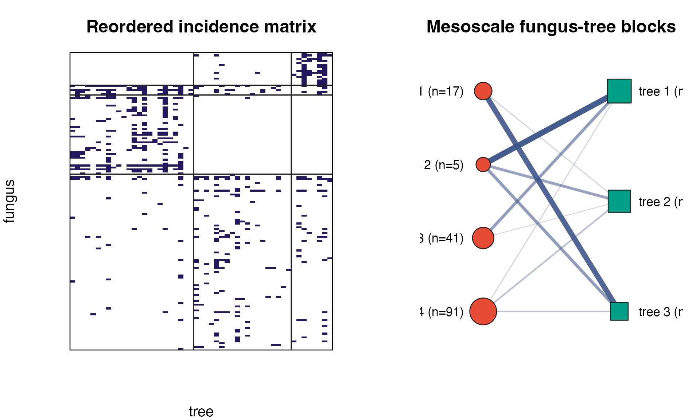

Bipartite & Ecological Networks: The Fungus-Tree Case Study
Source:vignettes/bipartite-sbms.Rmd
bipartite-sbms.RmdThis article reproduces and extends the classic ecological case study
from the sbm R
package (fungusTreeNetwork, originating from Vacher,
Piou & Desprez-Loustau 2008, PLoS ONE 3(3): e1740) using
rgraphtool’s native C++23 microcanonical Bipartite
Stochastic Block Model (Yen & Larremore 2020) and weighted
edge-covariate SBMs (Peixoto 2018).
The bundled dataset fungus_tree_network() records
antagonistic interactions between 154 fungal species
and 51 European tree species, along with the projected
\(51 \times 51\) tree–tree
shared-fungus count matrix and pairwise genetic, taxonomic, and
geographic distances between trees.
1. Inspecting the fungus–tree network
fungus_tree_network() returns both the raw matrices and
a validated rgraphtool_graph with vertex
"type" (FALSE for fungi, TRUE for
trees) and "name" property maps:
ft <- fungus_tree_network()
dim(ft$fungus_tree)
#> [1] 154 51
sum(ft$fungus_tree)
#> [1] 543
ft$graph
#> rgraphtool graph (undirected, 205 vertices, 543 edges)
#> graph props: dim_labels (chr)
#> vertex props: type (lgl), name (chr)
#> edges:
#> 1--191, 1--194, 1--195, 2--158, 2--166, 2--191, 2--192, 2--194, 2--195,
#> 2--203, 3--185, 4--156, 4--158, 4--164, 4--171, 4--172, 5--155, 5--156,
#> 5--157, 5--158, ... (+523 more)
is_bipartite(ft$graph)
#> [1] TRUE2. Fitting a microcanonical Bipartite SBM
Just like sbm::estimateBipartiteSBM(),
minimize_bipartite_blockmodel_dl() accepts a rectangular
incidence matrix directly (or a bipartite_graph() object).
Rather than requiring a grid search over block numbers with variational
EM, rgraphtool minimizes the exact microcanonical bipartite
description length \(\Sigma\) in
C++23—using the bipartite edge-count prior \(\ln\binom{B_{\text{fungus}} B_{\text{tree}} + E -
1}{E}\) to select \((B_{\text{fungus}},
B_{\text{tree}})\) automatically without resolution-limit
penalties from impossible intra-type edges:
set.seed(42)
fit_bip <- minimize_bipartite_blockmodel_dl(
ft$fungus_tree,
dim_labels = c("fungus", "tree"),
nruns = 3L
)
fit_bip
#> <bipartite block state (degree-corrected, unweighted, edge_prior = bipartite)>
#> fungus: 154 vertices -> 4 blocks
#> tree: 51 vertices -> 3 blocks
#> edges: 543 | description length: 1694.3719 nats
# Separate 1-based block memberships for fungi and trees (with species names)
mem <- bipartite_membership(fit_bip)
table(fungus_block = mem$fungus)
#> fungus_block
#> 1 2 3 4
#> 17 5 41 91
table(tree_block = mem$tree)
#> tree_block
#> 1 2 3
#> 24 19 8
# Rectangular B_fungus x B_tree interaction density matrix
round(bipartite_block_matrix(fit_bip, normalize = "density"), 3)
#> tree
#> fungus tree_1 tree_2 tree_3
#> fungus_1 0.000 0.019 0.404
#> fungus_2 0.442 0.179 0.200
#> fungus_3 0.195 0.003 0.000
#> fungus_4 0.018 0.075 0.058
# Reordered incidence matrix ("data" view) and mesoscale block diagram ("meso" view)
old_par <- graphics::par(mfrow = c(1L, 2L), mar = c(4, 4, 3, 1))
plot_bipartite(fit_bip, type = "matrix", main = "Reordered incidence matrix")
plot_bipartite(fit_bip, type = "meso", main = "Mesoscale fungus-tree blocks")
graphics::par(old_par)3. Degree correction, hierarchy & Bayesian posterior sampling
Ecological interaction networks typically exhibit pronounced degree
heterogeneity (generalist vs. specialist species).
compare_bipartite_models() compares degree-corrected (DC)
vs. non-degree-corrected (NDC) and flat vs. hierarchical (nested)
bipartite SBMs by exact description length:
set.seed(42)
cmp <- compare_bipartite_models(
ft$fungus_tree,
dim_labels = c("fungus", "tree"),
nruns = 2L
)
cmp
#> <bipartite block model comparison>
#> model nested degree_corrected B_row B_col description_length delta_dl
#> nested_dc TRUE TRUE 4 3 1692.717 0.000000
#> flat_dc FALSE TRUE 4 3 1694.543 1.825824
#> flat_ndc FALSE FALSE 6 6 1712.970 20.252526
#> nested_ndc TRUE FALSE 3 3 1781.155 88.437387
#> Best model: nested_dc
# Finite-temperature MCMC posterior sampling around the MAP bipartite state
set.seed(42)
post <- sample_posterior(fit_bip, nsamples = 50L, burnin = 25L, thin = 2L)
summary(post$entropies)
#> Min. 1st Qu. Median Mean 3rd Qu. Max.
#> 1697 1712 1721 1725 1740 17634. Simple & covariate-weighted SBMs on the tree–tree network
Following the second half of the GrossSBM/sbm tutorial,
we also analyze the unipartite \(51 \times
51\) tree_tree network (counting how many fungal
parasites each pair of tree species shares), comparing a binary topology
SBM, a Poisson count SBM (discrete-poisson), and a
multi-covariate SBM incorporating taxonomic distance
(covar_tree$taxonomic_dist):
tree_mat <- ft$tree_tree
diag(tree_mat) <- 0
idx <- which(upper.tri(tree_mat) & tree_mat > 0, arr.ind = TRUE)
g_tree <- graph_create(nrow(tree_mat), directed = FALSE)
graph_set_vertex_property(g_tree, "name", ft$tree_names)
graph_add_edges(
g_tree,
idx,
properties = list(
shared_fungi = tree_mat[idx],
genetic_dist = ft$covar_tree$genetic_dist[idx],
taxonomic_dist = ft$covar_tree$taxonomic_dist[idx],
geographic_dist = ft$covar_tree$geographic_dist[idx]
)
)
g_tree
#> rgraphtool graph (undirected, 51 vertices, 688 edges)
#> vertex props: name (chr)
#> edge props: genetic_dist (dbl), geographic_dist (dbl), shared_fungi (dbl), taxonomic_dist (dbl)
#> edges:
#> 1--2, 1--3, 1--4, 1--5, 1--6, 1--9, 1--10, 1--11, 1--12, 1--13, 1--14,
#> 1--15, 1--16, 1--17, 1--18, 1--19, 1--20, 1--21, 1--22, 1--23, ... (+668
#> more)
set.seed(42)
fit_tree_bin <- minimize_blockmodel_dl(g_tree)
fit_tree_poi <- minimize_weighted_blockmodel_dl(
g_tree, weights = "shared_fungi", types = "discrete-poisson"
)
fit_tree_cov <- minimize_weighted_blockmodel_dl(
g_tree,
weights = c("shared_fungi", "taxonomic_dist"),
types = c("discrete-poisson", "real-exponential")
)
cat(sprintf("Binary tree SBM: %d blocks (DL = %.2f nats)\n",
length(block_sizes(fit_tree_bin)),
block_description_length(fit_tree_bin)))
#> Binary tree SBM: 1 blocks (DL = 1001.38 nats)
print(fit_tree_poi)
#> <weighted block state: degree-corrected, discrete-poisson, B = 5, description length 2214.4126 nats>
print(fit_tree_cov)
#> <weighted block state: degree-corrected, discrete-poisson+real-exponential, B = 6, description length 2629.5117 nats>5. Exporting & round-tripping with graph-tool
(.gt) and igraph
Because bipartite_graph() stores "type" and
"name" as standard vertex property maps and
"dim_labels" as a graph property map, bipartite networks
round-trip losslessly through both Python graph-tool’s
binary .gt format and R’s igraph package:
gt_path <- tempfile(fileext = ".gt.gz")
write_gt(ft$graph, gt_path)
g_reloaded <- read_gt(gt_path)
unlink(gt_path)
identical(as_incidence_matrix(g_reloaded), ft$fungus_tree)
#> [1] FALSE
if (requireNamespace("igraph", quietly = TRUE)) {
ig <- as_igraph(ft$graph)
cat(sprintf("igraph bipartite: %s (%d vertices, %d edges)\n",
igraph::is_bipartite(ig), igraph::vcount(ig), igraph::ecount(ig)))
g_from_ig <- bipartite_graph(ig)
identical(as_incidence_matrix(g_from_ig), ft$fungus_tree)
}
#> igraph bipartite: TRUE (205 vertices, 543 edges)
#> [1] FALSEReferences
- Vacher, C., Piou, D., & Desprez-Loustau, M.-L. (2008). Architecture of an antagonistic tree/fungus network: the asymmetric influence of past evolutionary history. PLoS ONE, 3(3), e1740.
- Yen, T.-C., & Larremore, D. B. (2020). Community detection in bipartite networks with stochastic block models. Physical Review E, 102(3), 032309.
- Chiquet, J., Donnet, S., & Barbillon, P.
(
GrossSBM/sbm): Stochastic Blockmodels R package (https://grosssbm.github.io/sbm/).